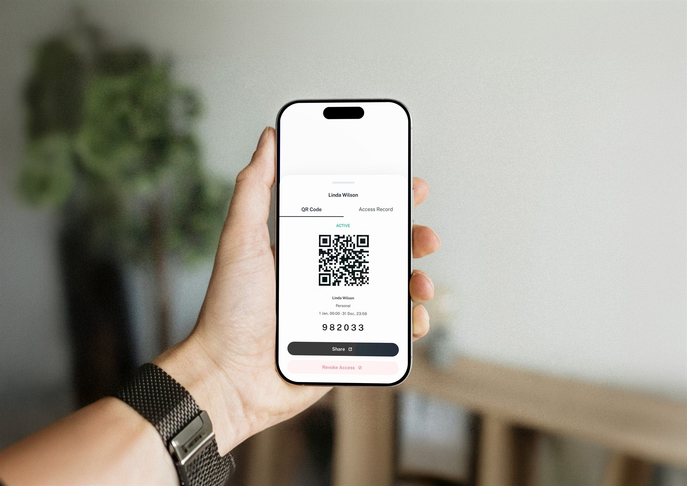

Issue temporary keys instantly.
Giving guests or contractors access is entirely hassle-free. You can quickly generate and send a temporary key as a time-bound QR code to anyone before they arrive. When they show up, they simply flash the code on their phone screen in front of the reader to get instant, authorized entry during their scheduled window.